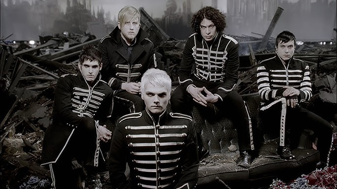
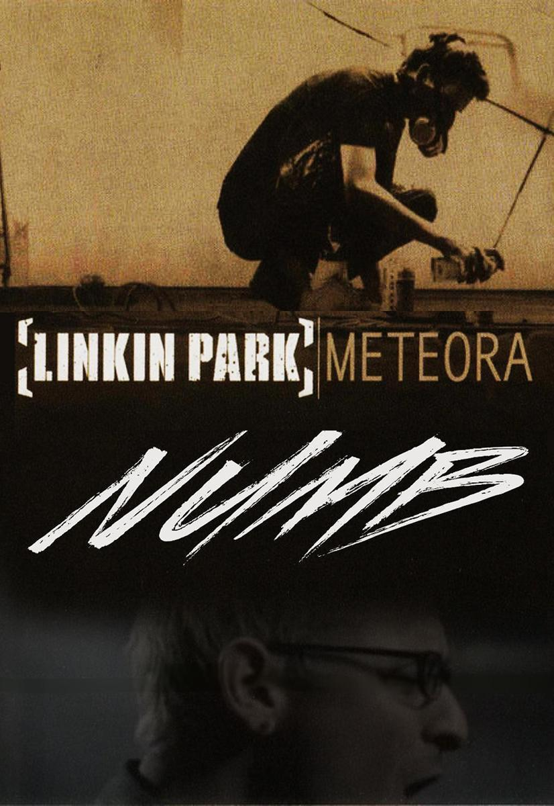

-

The Shrapest lives

My Chemical Romance — американська рок-група з Нью-Джерсі. Поточний склад гурту складається з головного вокаліста Джерарда Вея, головного гітариста Рея Торо, ритм-гітариста Френка Іеро та басиста Майкі Вея. Вони вважаються однією з найвпливовіших рок-груп 2000-х і головною групою в поп-панку та емо-жанрах, незважаючи на те, що гурт відмовився від останнього лейбла. Створений у вересні 2001 року Джерардом, Майкі, Торо та барабанщиком Метом Пелісьє (а пізніше до них приєднався Іеро), гурт підписав контракт з Eyeball Records і випустив свій дебютний альбом I Brought You My Bullets, You Brought Me Your Love у 2002 році. Наступного року вони підписали контракт із Reprise Records і випустили свій дебютний альбом Three Cheers for Sweet. Revenge, у 2004 році. Невдовзі після виходу альбому Пелісьє змінив Боб Браяр. Альбом мав комерційний успіх, отримавши платиновий статус більше ніж через рік. Успіх попередніх альбомів гурту був затьмарений концептуальним альбомом рок-опери The Black Parade 2006 року. Його провідний сингл «Welcome to the Black Parade» став великим комерційним успіхом і очолив британський чарт синглів. Альбом зміцнив прихильників групи, незважаючи на негативне висвітлення в Daily Mail, що викликало суперечки. Четвертий студійний альбом гурту, Danger Days: The True Lives of the Fabulous Killjoys, був випущений у 2010 році. Брайар залишив групу ще до виходу альбому, а в 2012 році до них додався клавішник Джеймс Дьюїз, який гастролював. У 2012 і 2013 роках гурт випустив серію синглів, які вони записали в 2009 році під спільною назвою «Звичайна зброя». My Chemical Romance оголосили про свій розпад 22 березня 2013 року. У 2014 році вийшов альбом із найкращими хітами під назвою May Death Never Stop You, а в 2016 році було випущено десяте ювілейне перевидання The Black Parade. 31 жовтня 2019 року гурт оголосив про реюніон-шоу, яке відбулося в Лос-Анджелесі 20 грудня 2019 року. У січні 2020 року вони оголосили про додаткові концерти та реюніон-тур, який розпочався у 2022 році після дворічної відстрочки через пандемію COVID-19 і завершився на початку 2023 року.
-

Linking Park
Linkin Park — американський рок-гурт, створений у Агура-Гіллз, штат Каліфорнія, у 1996 році. Нинішній склад гурту складається з вокаліста/ритм-гітариста/клавішника Майка Шиноди, головного гітариста Бреда Делсона, ді-джея/турнтабліста Джо Хана, бас-гітариста Дейва Фаррелла, вокаліста Емілі Армстронг і барабанщика Коліна Бріттейна. Склад перших семи студійних альбомів гурту включав головного вокаліста Честера Беннінгтона та барабанщика Роба Бурдона до самогубства Беннінгтона в липні 2017 року, що спричинило перерву на невизначений термін. У вересні 2024 року було оголошено про реформування Linkin Park разом із додаванням Армстронга та Бріттіна. Класифікована переважно як альтернативний рок і ню-метал, рання музика Linkin Park охоплювала злиття хеві-металу та хіп-хопу, тоді як їхня музика містить більше електроніки та поп-елементів. Linkin Park здобули міжнародну популярність завдяки своєму дебютному студійному альбому Hybrid Theory (2000), який отримав Діамантовий сертифікат Асоціації звукозаписної компанії Америки (RIAA). Випущений під час піку ню-метал сцени, сильний трансляція синглів альбому на MTV призвела до того, що сингли «One Step Closer», «Crawling» і «In the End» посіли високі позиції в американському мейнстрім-рок-чарті. Останній також перейшов на друге місце в національному Billboard Hot 100.[2] Їхній другий альбом, Meteora (2003), продовжив успіх групи.Група досліджувала експериментальні звуки на своєму третьому альбомі Minutes to Midnight (2007). До кінця десятиліття Linkin Park був одним з найуспішніших і популярних рок-гуртів
-


-


-


Танець недоумка
Космічний біолог Гіль, за плечима якого чимало військових операцій, переживає не найкращі часи: безробіття, безгрошів'я, сім'я на межі розлучення, ще й висока ймовірність, що проявиться спадкова генетична хвороба, в якій швидка смерть — це чи не найкращий фінал.
Танці з кістками
Твір описує життя патологоанатома-невдахи Северина, який незадоволений своїм фінансовим станом та досягненнями в житті. Несподівано Донику випадає можливість заробити на ринку трансплантації органів. Попри нелегальність, герой погоджується на злочини, в надії налагодити власне життя за допомогою грошей.
“Страх - це кокаїн. Він робить глухим до аргументів розуму, і ти бачиш тільки те, що боїшся побачити.”Ілларіон Павлюк, Танець недоумка
“Люди в ранковому громадському транспорті уникали дивитися одне одному в очі не через природний дискомфорт, а через те, що не хотіли бачити віддзеркалення власної жалюгідності.”Андрій Сем’янків, Танці з кістками
Venice
Зроби крок, і дорога з'явиться сама собою.Стів Джобс
Turkey
Тут знаменитий собор Святої Софії з його спрямованим вгору куполом і християнськими мозаїками, велична Блакитна мечеть XVII століття і побудований в 1460-і роки палац Топкапи
Зроби крок, і дорога з'явиться сама собою.Стів Джобс